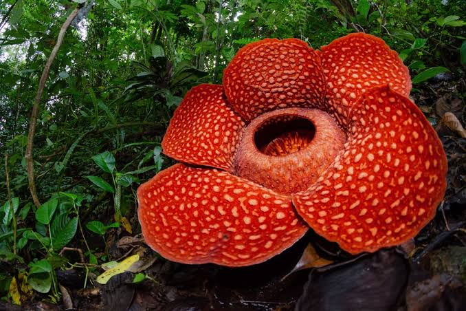
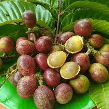
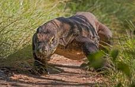

1. Rafflesia Arnoldii
Bunga berukuran besar yang dapat
ditemukan
di wilayah Sumatra.
Mengenal Kekayaan Alam Indonesia
Indonesia merupakan negara kepulauan yang sangat luas dari sabang hingga marauke dengan memiliki kekayaan alam yang berlimpah. Dataran hingga lautan yang luas menjadikan indonesia kaya akan Flora dan Fauna endemik khasnya.
Flora adalah segala jenis tumbuhan, sedangkan fauna adalah segala jenis hewan. Keduanya berperan penting dalam menjaga keseimbangan ekosistem.
Kita harus menjaga kelestarian alam agar flora dan fauna Indonesia tidak mengalami kepunahan.
Bunga berukuran besar yang dapat
ditemukan
di wilayah Sumatra.
Matoa (Pometia pinnata) adalah tanaman buah khas asli Papua, Indonesia. Pohon besar ini bisa tumbuh setinggi 20–40 meter.
Pohon berkayu yang dimanfaatkan untuk bahan bangunan dan perabot.
Reptil besar yang hidup di beberapa pulau di Nusa Tenggara Timur.
Primata yang hidup di hutan Sumatra dan Kalimantan.
Satwa langka yang berasal dari Pulau Sumatra.



Terima kasih telah membaca informasi tentang flora dan fauna Indonesia.
Mari kita jaga dan lestarikan kekayaan alam Indonesia untuk generasi mendatang.
Kembali ke Atas